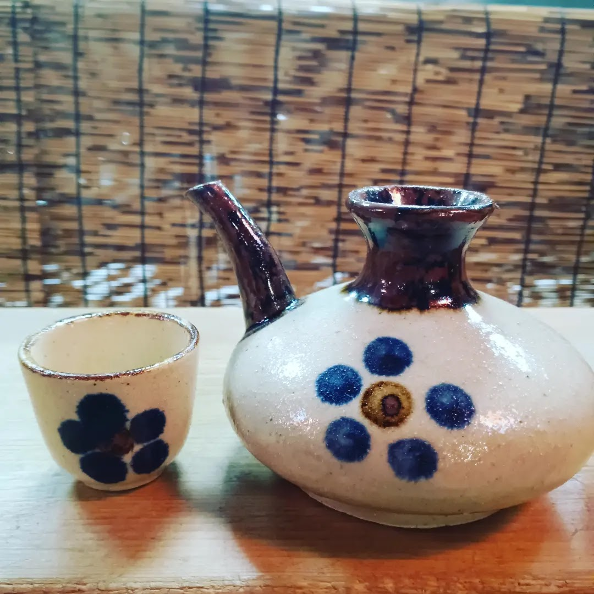
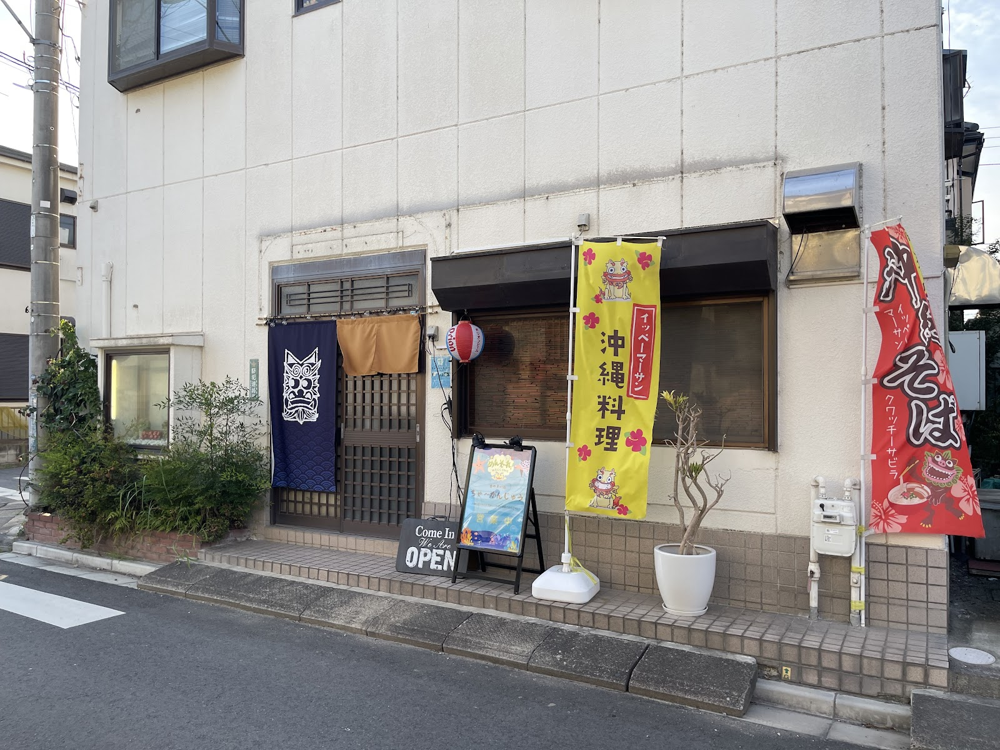

沖縄出身の店主が営む、家庭の味
写真: カズボウ(Google マップ)
店主・スタッフについて
沖縄出身の店主とスタッフが、笑顔で迎えてくれるお店です。カウンター越しの会話も賑やかで、常連の方も、初めて一人でふらりと立ち寄る方も、気さくに迎え入れています。沖縄の空気をそのまま持ち込んだような、あたたかい雰囲気が魅力です。


料理へのこだわり
本土のお客様にもなじみやすい、優しい味付けの沖縄家庭料理をご用意しています。しっかりとした沖縄の味わいを大切にしながらも、初めての方にも食べやすい仕上がりを心がけています。一人でカウンターに腰かけてゆっくりと、大勢で賑やかに――どちらの過ごし方にも寄り添えるお店です。
こんな方におすすめです
- 一人でふらっと飲みたい方
- 沖縄料理や泡盛などの島の酒が好きな方
- 仲間との飲み会で、少し違う雰囲気を楽しみたい方
- 新取手駅周辺でお店を探している方